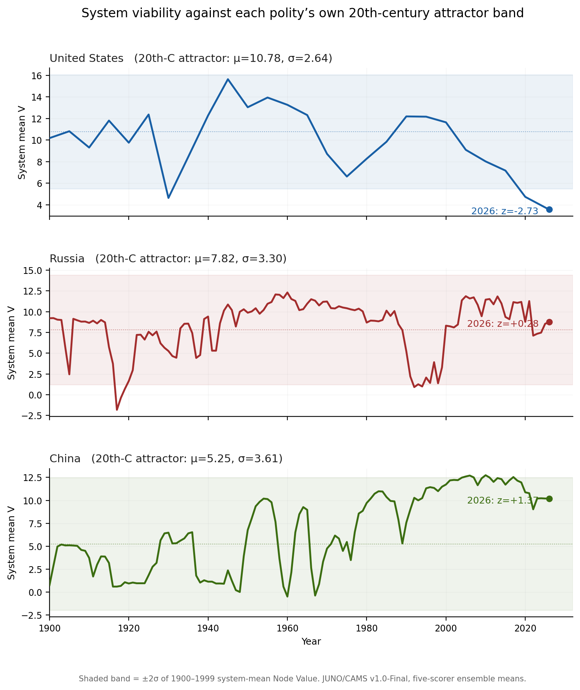

Results Note · JUNO/CAMS v1.0-Final · June 2026
Three Great-Power Trajectories Against Their Own Historical Attractors
Bloc-coordination structure and the isolation of the United States trajectory in the contemporary great-power set
1. Methods
1.1 Data
Three longitudinal series were analysed, each an ensemble mean over five independent scoring passes under an identical protocol on the canonical eight institutional nodes (Helm, Shield, Lore, Stewards, Craft, Hands, Archive, Flow): the United States (1900–2026, 5-year resolution), Russia (1800–2026, annual; 1900–2026 used here), and China (1875–2026, annual; 1900–2026 used here). Each series is accompanied by an envelope file recording inter-scorer dispersion (per-node V-range, V-min, V-max) for robustness testing.
1.2 Node viability and the attractor band
Node viability follows the canonical definition V = C + K − S + 0.5A, computed per node-year, with system viability taken as the mean across the eight nodes. For each polity the historical attractor is the mean (μ) and standard deviation (σ) of system viability over 1900–1999. The interval μ ± 2σ is the attractor band: the region the system occupied across the full twentieth century, including its depressions, wars, and regime changes. A 2026 value outside this band indicates departure from the basin the system historically returned to. Position is reported as a z-score: z = (V₂₀₂₆ − μ) / σ.
1.3 Inter-node coupling
Edge weights follow the canonical bounded form Bij = √(qi·qj) · 2−(Si+Sj)/10, with coupling quality qi = (0.6Ci + 0.4Ai)/10, yielding B ∈ [0, 1]. The uploaded series carried legacy-scaled Bond-Strength values (range ≈ 2.7–38.7); these were recomputed under the canonical formula prior to analysis (recomputed range [0.07, 0.49]). Canonical-recomputed files are released with this note. System coupling is the mean edge weight per year; its attractor band is defined as for viability.
1.4 Correlation and robustness
Pairwise Pearson correlations between system-viability trajectories were computed on common years (1900–2026, n = 26) and on the post-2000 window (n = 6), with two-tailed p-values. Robustness was assessed by re-evaluating each 2026 position at the harsh and generous edges of the inter-scorer envelope; a result is considered robust when its qualitative classification (inside vs. outside band) holds across the full envelope.
2. Results
2.1 Position against the historical attractor
μ = 5.25 (low baseline, chronic pre-reform crisis)
Recovered from two prior basin exits (1917, 1991)
Lowest value in 126-year record. Only system outside its own envelope.
The three positions in 2026 are qualitatively distinct. The United States, having held a comparatively narrow band throughout the twentieth century (μ = 10.78, σ = 2.64) and recovered from every prior trough, descends monotonically after 2000 and crosses below its 2σ floor by 2020, reaching the lowest value in its 126-year record by 2026 (z = −2.73). Russia, the most volatile of the three, suffered two genuine basin exits — the 1917 revolutionary collapse (z = −2.92, negative viability) and the 1991 Soviet dissolution (z = −1.70) — yet recovered to within its band after each and sits inside it in 2026 (z = +0.28). China rises from the lowest twentieth-century baseline of the three (μ = 5.25), reflecting chronic pre-reform crisis, to above its band centre by the 2000s, holding there through 2026 (z = +1.37).

Figure 1. System viability (mean Node Value) for each polity, 1900–2026, against its own 1900–1999 attractor band (±2σ, shaded; mean dotted). Five-scorer ensemble means under JUNO/CAMS v1.0-Final. The US trajectory departs its band floor by 2020 and reaches its own 126-year minimum in 2026. Russia and China both remain within or above their own historical envelopes.
2.2 The bloc-coordination test
| Pair | Full century r (p) | Post-2000 r (p) | Significant? |
|---|---|---|---|
| China – Russia | +0.13 (0.53) | +0.80 (0.06) | No |
| China – USA | −0.35 (0.08) | +0.71 (0.11) | No |
| Russia – USA | +0.03 (0.87) | +0.23 (0.67) | No |
Two-tailed p in parentheses. Full century n = 26; post-2000 n = 6. No coefficient attains significance at α = 0.05.
2.3 The United States anomaly is two-dimensional
The US departure is not confined to viability. Mean inter-node coupling, recomputed on the canonical scale, falls from a twentieth-century baseline of 0.307 to 0.131 in 2026 (z = −2.48), closely mirroring the viability departure (z = −2.73). Russia (coupling z = −0.06) and China (z = +0.89) both retain their historical coupling.
Node-level decomposition identifies the driver. From 2000 to 2026 the US Lore (legitimacy) node falls from 11.3 to 0.5, a near-total evacuation, while the Shield (security) node remains the most intact institution in the system (7.5). A configuration in which the coercive node outlasts the legitimating node, under no external forcing within the window, is the framework signature of an endogenous legitimacy crisis rather than an externally imposed capacity shock.
The contrast with Russia and China is direct: over the same window the Russian Archive and Lore nodes strengthened (+3.1, +1.6), and the Chinese Archive node strengthened (+0.6) — i.e. the legitimacy and memory nodes consolidated in both of the systems most often grouped against the United States.
2.4 Robustness
All headline classifications survive inter-scorer envelope testing.
China: Harshest envelope edge gives z = +1.11, still above band centre.
Russia: Noisiest to score (2026 V-range 3.94, above its median). Envelope straddles band centre (harsh z = −0.34, generous z = +0.85). Classification: band-stable in direction — nowhere near a floor breach — but precise placement is scorer-sensitive. Reported as band-stable with wide uncertainty rather than pinned to a point estimate.
3. Discussion
The data support neither of the two narratives most often applied to this triad. They do not support a coordinated China–Russia bloc: across any window longer than the shared-shock period the trajectories are dynamically independent, and the one supportive correlation fails its significance test. Equally, they do not support a uniform great-power decline: of the three systems, two are at or above their own twentieth-century baselines and only one has left its historical envelope.
What the analysis isolates is a single anomaly. The system most often cast as the stable anchor of the international order is the one that has departed its basin of attraction — in both viability and coupling, led from the legitimacy node, under endogenous rather than external forcing — while the two systems most often cast as a threatening axis are independently holding above and within their own century-long bands.
4. Limitations
The post-2000 window is short by construction (n = 6); all post-2000-only statistics are reported with that limit explicit. The great-power comparison rests on a 26-point century series, which is adequate for the correlation and attractor tests reported but does not support finer temporal claims. All series are five-scorer ensemble means; the Russia 2026 placement carries materially wider inter-scorer uncertainty than the other two and is reported accordingly. Attractor bands are calibrated on 1900–1999 and are conditioned on each polity's particular twentieth-century history; bands are not interchangeable across polities and z-scores are within-system, not cross-system, measures. Finally, "departure from the attractor" is a statement about a system's own historical envelope, not a prediction of trajectory.
5. Data and reproducibility
Canonical-recomputed Node-Value and Bond-Strength series for all three polities are released with this note. Bond-Strength values in these files are computed under the canonical bounded edge weight and supersede the legacy-scaled values in the source uploads.
Instrument: JUNO/CAMS v1.0-Final · Five-scorer ensemble · Canonical Bond-Strength formula Bij = √(qiqj)·2−(Si+Sj)/10 · Attractor bands calibrated 1900–1999 · z-scores within-system only